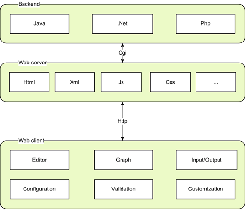
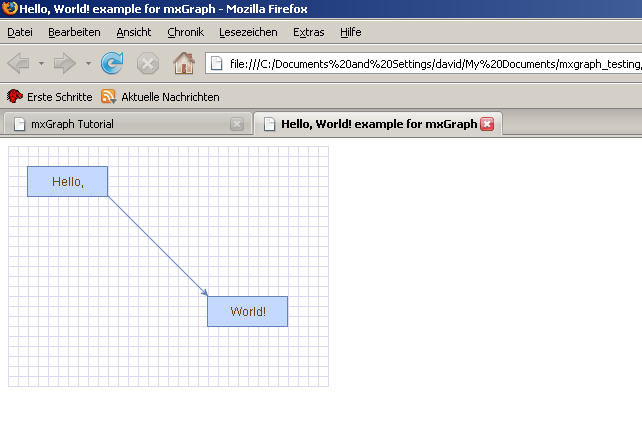

A simple Graph
mxGraph Version 3.9.12 – 14. December 2018
Copyright (c) JGraph Ltd 2006-2017
All rights reserved. No part of this publication may be reproduced, stored in a retrieval system, or transmitted in any form or by any means, electronic, mechanical, photocopying, recording or otherwise, without the prior written permission of the author.
The programs in this book have been included for their instructional value. They have been tested with care but are not guaranteed for any particular purpose. The publisher does not offer any warranties or representations nor does it accept any liabilities with respect to the programs.
Possession, use, or copying of the software described in this publication is authorized only pursuant to a valid written license from JGraph Ltd.
Neither JGraph Ltd. nor its employees are responsible for any errors that may appear in this publication. The information in this publication is subject to change without notice.
Java and all Java-based marks are trademarks or registered trademarks of Sun Microsystems, Inc. in the U.S. and other countries.
mxGraph is a JavaScript component that provides features aimed at applications that display interactive diagrams and graphs. Note by graphs we mean mathematical graphs, not necessarily charts (although some charts are graphs). See later section “What is a Graph?” for more details.
Being a developer library, mxGraph is not designed specifically to provide a ready to use application, although many of the examples are close to being usable applications. mxGraph provides all the commonly required functionality to draw, interact with and associate a context with a diagram. mxGraph comes with a number of examples that help explain how a basic application is put together and showcases individual features of the library.
Developers integrating the library in their application should read the section “Pre-requisites” below. Given that mxGraph is a component part of your application, you must understand how JavaScript web applications are constructed at an architectural level, and how to program both in JavaScript, as well as any server-side languages used.
mxGraph mainly comprises one JavaScript file that contains all of the mxGraph functionality. This is loaded into a HTML web page in a JavaScript section and executes in an HTML container in the browser. This is an incredibly simple architecture that only requires a web server capable of serving html pages and a JavaScript enabled web browser.
The key advantages of this technology are:

The mxGraph components and their relationships
Example applications for a graph visualization library include: process diagrams, workflow and BPM visualization, flowcharts, traffic or water flow, database and WWW visualization, networks and telecommunications displays, mapping applications and GIS, UML diagrams, electronic circuits, VLSI, CAD, financial and social networks, data mining, biochemistry, ecological cycles, entity and cause-effect relationships and organisational charts.
In the typical thin-client environment, mxGraph is split into the client-side JavaScript library and a server-side library in one of the two supported languages, .NET and Java. The JavaScript library is contained as part of a larger web application that is delivered to the browser using a standard web server. All the browser needs is the ability to run JavaScript to be enabled.
In the third part of this manual, you will see an example of an html page that embeds the mxGraph library, as well as a simple application to invoke the library's functionality.
mxGraph uses JavaScript for the client-side functionality on the browser. The JavaScript code in turn uses the underlying vector graphics language on the active browser to render the displayed diagram, currently SVG for all supported browsers. mxGraph also includes the feature to render entirely using html, this limits the range of functionality available, but is suitable for more simple diagrams.
As a developer you are not exposed to browser specific features. As mentioned, the vector graphics language varies by browser, so mxGraph abstracts their features into a common class. Similarly, for event handling and DOMs. Browsers differ in their implementation of these two major browser functionalities, mxGraph exposes a constant API over all browsers and adapts to the inconsistencies behind the scenes.
The JavaScript client of mxGraph is licensed under the Apache 2.0 license For detailed licensing questions you are always advised to consult a legal professional.
Graph visualization is based on the mathematical theory of networks, graph theory. If you're seeking JavaScript bar charts, pie charts, Gantt charts, have a look at the Google Charts project instead, or similar
A graph consists of vertices, also called nodes, and of edges (the connecting lines between the nodes). Exactly how a graph appears visually is not defined in graph theory. The term cell will be used throughout this manual to describe an element of a graph, either edges, vertices or groups.
A simple Graph
There are additional definitions in graph theory that provide useful background when dealing with graphs, they are listed in the Appendices if of interest to you.
Visualization is the process of creating a useful visual representation of a graph. The scope of visualization functionality is one of mxGraphs' main strength. mxGraph supports a wide range of features to enable the display of cells to only be limited by the skill of the developer and the platform functionality available. Vertices may be shapes, images, vector drawing, animations, virtually any graphical operations available in browsers. You can also use HTML mark-up in both vertices and edges.

Graph Visualization of a transport system. (c) Tourizm Maps
2003, http://www.world-maps.co.uk
Interaction is the way in which an application using mxGraph can alter the graph model through the web application GUI. mxGraph supports dragging and cloning cells, re-sizing and re-shaping, connecting and disconnecting, drag and dropping from external sources, editing cell labels in-place and more. One of the key benefits of mxGraph is the flexibility of how interaction can be programmed.
Many complex graphical web applications rely on a round-trip to the server in order to form the display, not only the base display but also the interaction events. Although this is often given the title of AJAX functionality, such server reliance is not appropriate for interaction events. Visual feedback taking longer than about 0.2 seconds in an application generally seriously impacts the usability. By placing all of the interaction on the client, mxGraph provides the true feel of a application, rather than seeming like a dumb remote terminal. It also allows the possibility of off-line use.

Selection shading while selecting an area through mouse drag
Graph cells can be drawn anywhere in a simple application, including on top of one another. Certain applications need to present their information in a generally ordered, or specifically ordered structure. This might involve ensuring cells do not overlap and stay at least a certain distance from one another, or that cells appear in specific positions relative to other cells, usually the cells they are connected to by edges. This activity, called the layout application, can be used in a number of ways to assist users in setting out their graph. For non-editable graphs, layout application is the process of applying a layout algorithm to the cells. For interactive graphs, meaning those that can be edited through the UI, layout application might involve only allowing users to make changes to certain cells in certain positions, to re-apply the layout algorithm after each change to the graph, or to apply the layout when editing is complete.

Layout of a workflow using a horizontal hierarchical layout
mxGraph supports a range of tree, force-directed and hierarchical layouts which will fit most layout needs. See the later section on using the layouts for more information.
In a client-server architecture there are two options for how layouts can be run. The Javascript versions provide the ability to run the layouting entirely on the client, while the same layout implementation in Java on the server-side enables the option to offload some processing to the server, if required.
Analysis of graphs involves the application of algorithms determining certain details about the graph structure, for example, determining all routes or the shortest path between two cells. There are more complex graph analysis algorithms, these being often applied in domain specific tasks. Techniques such as clustering, decomposition, and optimization tend to be targeted at certain fields of science and have not been implemented in the core mxGraph packages at the current time of writing.

Shortest Path Analysis
To benefit fully from this manual you will need to have a reasonable understanding of web applications and of the server technology you wish to deploy using. Deployment examples are available for each of the server technologies supported, some familiarity with that server technology is obviously required.
Basic XML knowledge is useful for changing the editor configuration files that describe the visual and behavioural aspects of the editor. You will need to understand and implement Javascript coding and be familiar with object orientated programming principles and modern software design.
You do not need knowledge of the underlying vector graphics language that the browser uses, such as SVG or HTML canvas. mxGraph abstracts the description of the visual component into one API.
mxGraph is available from the GitHub project. Released versions are tagged "va.b.c", where a, b and c are version number parts following semantic versioning.
Each formal release is also available as .zip or .tar.gz on the mxGraph releases page.
Once unzipped you will be presented with a number of files and directories in the installation root.
|
/doc |
Documentation root, includes this user manual |
|
/dotnet |
.NET server-side classes |
|
/java |
Java server-side classes |
|
/javascript |
JavaScript client functionality. |
|
/javascript/examples |
HTML examples demonstrating the use of mxGraph |
|
ChangeLog |
Details of the changes between releases |
|
index.html |
Basic introduction to the library |
|
license.txt |
The licensing terms under which you must use the library |
Table: Project Directory Structure
mxGraph is also available via the npm package manager. To use mxGraph as
a depedency, use npm install:
npm install mxgraph --save
The module can be loaded using require(). This returns a
factory function that accepts an object of options. Options such as
mxBasePath must be provided to the factory function, rather
than specified as global variables.
var mxgraph = require("mxgraph")({
mxImageBasePath: "./src/images",
mxBasePath: "./src"
})
The factory function returns a 'namespace object' that provides access to
all objects of the mxGraph package. For example, the mxEvent
object is available at mxgraph.mxEvent.
var mxEvent = mxgraph.mxEvent; mxEvent.disableContextMenu(container);
Web applications, specifically the use of JavaScript to attempt to emulate desktop application-like behaviour in web browsers, is still a relatively new field of software engineering. There are three main issues with JavaScript that are perceived to be a barrier to producing high quality applications, performance, lack of native functionality available in desktop applications and inconsistent APIs between browsers.
There has been considerable effort toward developing framework libraries to solve two of the problems, the functionality and API issues. The requirements of many of these libraries is driven by both improving web site design and usability, as well as to assist production of what we generally refer to as application features (menus, windows, dialogs, persistence, event handling, etc). They also provide certain base functionalities missing in JavaScript that desktop application developers take for granted, such as basic maths and collections functionality.
Many of these JavaScript frameworks have IDE support for development nowadays and all of the major browsers now contain JavaScript debuggers, either natively or as a plug-in. There is no compilation phase with JavaScript (it is an interpreted language) so basic typographical errors are often only caught at runtime, unless you obtain a syntax checking tool in your IDE. So although there is not one complete package for your JavaScript development needs, there are a number of vendors providing the individual components you need to produce JavaScript applications effectively.
Rather than list and compare every JavaScript framework, please see the wikipedia entries for web application frameworks and the comparison of JavaScript. The comparison should not be considered authoritative, more so it illustrates the types of features provided, such as event handling, animation, widgets, AJAX request support etc. This site is also a useful list of JavaScript libraries, mostly being open/free source licensed.
Be aware that many frameworks add implicit behaviours to make JavaScript appear more like an OO language and to increase the base functionality of the language. During the writing of the layout portion of mxGraph, it was found that this implicit behaviour broke an example in a very hard to debug manner. Be aware that this may cause problems and if you select a framework ensure you understand which implicit behaviours it introduces.
When selecting a framework and/or libraries think about which frameworks tie you into certain functional behaviour and look for libraries that provide features such as animation as distinct, independent blocks, that you can use without being tied into the overall design.
This area is often misunderstood, put simply, there is no integration required. Web applications generally comprise one or more div elements into which the HTML wrapping the JavaScript of the application is placed. If you create a div as a container for an mxGraph, that area is a stand-alone display for the mxGraph application. It can communicate itself with any back-end server, but there is no interdependence between that div and the rest of the page, other than the area each take up. This includes event handling, mxGraph can handle the events for its container, even if the rest of the web page used a completely different event model. As long as neither mxGraph nor the other libraries and frameworks on the page introduce implicit behaviours that break one part of the page, the issue of client integration is not something that needs analysis.
Integration of the mxGraph back-end functionality, that which sits at the server-side is the subject of a later chapter.
In JavaScript, there are various ways of mapping the Object Oriented paradigm to language constructs. mxGraph uses a particular scheme throughout the project, with the following implicit rules:
There are two types of “classes” in mxGraph; classes and singletons (where only one instance of the class exists). Singletons are mapped to global objects where the variable name is the same as the class name. For example, mxConstants is an object with all the constants defined as object fields. Normal classes are mapped to a constructor function and a prototype which defines the instance fields and methods. For example, mxEditor is a function and mxEditor.prototype is the prototype for the object that the mxEditor function creates. The mx prefix is a convention that is used for all classes in the mxGraph package to avoid conflicts with other objects in the global namespace.
For subclassing, the superclass must provide a constructor that is either parameterless or handles an invocation with no arguments. Furthermore, the special constructor field must be redefined after extending the prototype. For example, the superclass of mxEditor is mxEventSource. This is represented in JavaScript by first “inheriting” all fields and methods from the superclass by assigning the prototype to an instance of the superclass, eg.
mxEditor.prototype = new mxEventSource()
and redefining the constructor field using:
mxEditor.prototype.constructor = mxEditor
The latter rule is applied so that the type of an object can be retrieved via the name of it’s constructor using mxUtils.getFunctionName(obj.constructor).
For subclassing in mxGraph, the same mechanism should be applied. For example, for subclassing the mxGraph class, first a constructor must be defined for the new class. The constructor calls the super constructor with any arguments that it may have using the call function on the mxGraph function object, passing along explicitly each argument:
function MyGraph(container)
{
mxGraph.call(this, container);
}
The prototype of MyGraph inherits from mxGraph as follows. As usual, the constructor is redefined after extending the superclass:
MyGraph.prototype = new mxGraph(); MyGraph.prototype.constructor = MyGraph;
You may want to define the codec associated for the class after the above code (see I/O section of manual). This code will be executed at class loading time and makes sure the same codec is used to encode instances of mxGraph and MyGraph.
var codec = mxCodecRegistry.getCodec(mxGraph); codec.template = new MyGraph(); mxCodecRegistry.register(codec);
In the prototype for MyGraph, functions of mxGraph can be extended as follows.
MyGraph.prototype.isSelectable = function(cell)
{
var selectable = mxGraph.prototype.isSelectable.apply(this, arguments);
var geo = this.model.getGeometry(cell);
return selectable &&(geo == null || !geo.relative);
}
The supercall in the first line is optional. It is done using the apply function on the isSelectable function object of the mxGraph prototype, using the special this andn arguments variables as parameters. Calls to the superclass function are only possible if the function is not replaced in the superclass as follows, which is another way of “subclassing” in JavaScript.
mxGraph.prototype.isSelectable = function(cell)
{
var geo = this.model.getGeometry(cell);
return selectable && (geo == null || !geo.relative);
}
The above scheme is useful if a function definition needs to be replaced completely.
In order to add new functions and fields to the subclass, the following code is used. The example below adds a new function to return the XML representation of the graph model:
MyGraph.prototype.getXml = function()
{
var enc = new mxCodec();
return enc.encode(this.getModel());
}
Likewise, a new field is declared and defined as follows:
MyGraph.prototype.myField = ‘Hello, World!’;
Note that the value assigned to myField is created only once, that is, all instances of MyGraph share the same value. If you require instance-specific values, then the field must be defined in the constructor instead. For example:
function MyGraph(container)
{
mxGraph.call(this, container);
this.myField = [];
}
Finally, a new instance of MyGraph is created using the following code, where container is a DOM node that acts as a container for the graph view:
var graph = new MyGraph(container);
By default, when you deliver JavaScript to a browser client, you deliver the entire source to that JavaScript. That JavaScript is then interpreted and run on the browser. It is not possible to encrypt the JavaScript to any extent on the client at the point it is run, since the JavaScript source must be understood by the JavaScript interpretor and interpreted languages do not have a binary intermediate form.
It would be possible to encrypt the JavaScript in transmission and have it decrypted and run on the client, but the client would still be able to access the source after decryption.
We do not obfuscate because the method names form a public API and I/O would need to understand the obfuscation at both communication ends.
The concept of namespaces does not exist in standised JavaScript, so take
great care when creating new class names. In mxGraph, all of the classes
begin with the prefix “mx-”, to avoid clashes or overriding
prototypes unintentionally.
Hello World in mxGraph consists of a simple client-side example that displays two connected vertices with the labels “Hello” and “World!”. The example demonstrates the following things:
The source code for the example, helloworld.html, can be found below and in the examples directory of both the evaluation and full versions of mxGraph. The HTML source contains two main sections, the head and the body. These contain the following main elements that you can consider a template for building a basic mxGraph application:
Note that the overflow:hidden style should always be used if you want no scrollbars to appear.

The mxGraph HelloWorld example
<html>
<head>
<title>Hello, World! example for mxGraph</title>
<!-- Sets the basepath for the library if not in same directory -->
<script type="text/javascript">
mxBasePath = '../src';
</script>
<!-- Loads and initializes the library -->
<script type="text/javascript" src="../src/js/mxClient.js"></script>
<!-- Example code -->
<script type="text/javascript">
// Program starts here. Creates a sample graph in the
// DOM node with the specified ID. This function is invoked
// from the onLoad event handler of the document (see below).
function main(container)
{
// Checks if the browser is supported
if (!mxClient.isBrowserSupported())
{
mxUtils.error('Browser is not supported!', 200, false);
}
else
{
// Creates the graph inside the given container
var graph = new mxGraph(container);
// Enables rubberband selection
new mxRubberband(graph);
// Gets the default parent for inserting new cells. This
// is normally the first child of the root (ie. layer 0).
var parent = graph.getDefaultParent();
// Adds cells to the model in a single step
graph.getModel().beginUpdate();
try
{
var v1 = graph.insertVertex(parent, null,
'Hello,', 20, 20, 80, 30);
var v2 = graph.insertVertex(parent, null,
'World!', 200, 150, 80, 30);
var e1 = graph.insertEdge(parent, null, '', v1, v2);
}
finally
{
// Updates the display
graph.getModel().endUpdate();
}
}
};
</script>
</head>
<!-- Page passes the container for the graph to the program -->
<body onload="main(document.getElementById('graphContainer'))">
<!-- Creates a container for the graph with a grid wallpaper -->
<div id="graphContainer"
style="overflow:hidden;width:321px;height:241px;background:url('editors/images/grid.gif')">
</div>
</body>
</html>
Important concepts to note in this exercise are:
There are two versions of the mxclient.js file, one for production use and a second for development/debugging use. javascript/src/js/mxClient.js is the production version and javascript/debug/js/mxClient.js is for development. The first version has all linefeeds stripped to ensure the file is the minimal size possible. This has the side-effect of breaking most JavaScript debuggers. During development you are advised to use the debug version, which has the linefeeds in, enabling debugging in the supported browsers.
Both mxClient.js files are the entire JavaScript source to mxGraph, with all of the whitespace and comments removed to reduce file size. Whilst debugging, it is easier to use the individual source files if you need to debug into the mxGraph library itself. The source code version of mxGraph contains the full source in the source.zip file in the javascript/devel directory. Unzipping this into the mxBasePath and removing the load of the complete mxClient.js file enables easier debugging of mxGraph. Note that the mxclient.js file in the source zip is a bootstrap file that loads all the other JavaScript source code.
The download speed of the client source can be further improved by compressing the code. All modern browsers support receiving and uncompressing transmissions compressed at the server end and all good web servers support detection of those browser that do not support it and send the uncompressed version as a fallback.
For example, on the Apache web server there is a mod_deflate module, details of its use can be found from a standard search. The jgraph.com server uses this module and there have been no reports of issues in any supported browser.
The use of compression reduces the mxClient.js file size down from about 600KB to around 130KB. The difference is not noticed by the user on most modern networks, but there might be situations where the smaller version would be preferable.
The mxGraph model is the core model that describes the structure of the graph, the class is called mxGraphModel and is found within the model package. Additions, changes and removals to and from the graph structure take place through the graph model API. The model also provides methods to determine the structure of the graph, as well as offering methods to set visual states such as visibility, grouping and style.
However, although the transactions to the model are stored on the model, mxGraph is designed in such a way that the main public API is through the mxGraph class. The concept of “add this cell to the graph” is a more natural description of the action than “add this cell to the model of the graph”. Where it is intuitive, functions available on the model and cells are duplicated on the graph and those methods on the graph class are considered the main public API. Throughout the rest of this manual these key API methods are given a pink background:
anExampleCoreAPIMethod()
So, though many of the main API calls are through the mxGraph class, keep in mind that mxGraphModel is the underlying object that stores the data structure of your graph.
mxGraph uses a transactional system for making changes to the model. In the HelloWorld example we saw this code:
// Adds cells to the model in a single step
graph.getModel().beginUpdate();
try
{
var v1 = graph.insertVertex(parent, null, 'Hello,', 20, 20, 80, 30);
var v2 = graph.insertVertex(parent, null, 'World!', 200, 150, 80, 30);
var e1 = graph.insertEdge(parent, null, '', v1, v2);
}
finally
{
// Updates the display
graph.getModel().endUpdate();
}
to perform the insertion of the 2 vertices and 1 edge. For each change to the model you make a call to beginUpdate(), make the appropriate calls to change the model, then call endUpdate() to finalize the changes and have the change event notifications sent out.
Key API Methods:
Note – Technically you do not have to surround your changes with the begin and end update calls. Changes made outside of this update scope take immediate effect and send out the notifications immediately. In fact, changes within the update scope enact on the model straight away, the update scope is there to control the timing and concatenation of event notifications. Unless the update wrapping causes code aesthetic issues, it is worth using it by habit to avoid possible problems with event and undo granularity.
Note the way in which the model changes are wrapped in a try block and the endUpdate() in a finally block. This ensures the update is completed, even if there is an error in the model changes. You should use this pattern wherever you perform model changes for ease of debugging.
Ignore the reference to the parent cell for now, that will be explained later in this chapter.
The sub-transaction in the blue block above refers to the fact that transactions can be nested. That is, there is a counter in the model that increments for every beginUpdate call and decrements for every endUpdate call. After increasing to at least 1, when this count reaches 0 again, the model transaction is considered complete and the event notifications of the model change are fired.
This means that every sub-contained section of code can (and should) be surrounded by the begin/end combination. This provide the ability in mxGraph to create separate transactions that be used as “library transactions”, the ability to create compound changes and for one set of events to be fired for all the changes and only one undo created. Automatic layouting is a good example of where the functionality is required.
In automatic layouting, the user makes changes to the graph, usually through the user interface, and the application automatically positions the result according to some rules. The automatic positioning, the layouting, is a self-contained algorithm between begin/end update calls that has no knowledge of the specifics of the change. Because all changes within the begin/end update are made directly to the graph model, the layout can act upon the state of the model as the change is in progress.
It is important to distinguish between functionality that acts on the graph model as part of a compound change and functionality that reacts to atomic graph change events. In the first case, such as for automatic layouting, the functionality takes the model as-is and acts upon it. This method should only be used for parts of compound model changes. All other parts of the application should only react to model change events.
Model change events are fired when the last endUpdate call reduces the counter back down to 0 and indicate that at least one atomic graph change has occurred. The change event contains complete information as to what has altered (see later section on Events for more details).
Below is a list of the methods that alter the graph model and should be placed, directly or indirectly, with the scope of an update:
Initially, we will just concern ourselves with the add and remove, as well as the geometry and style editing methods. Note that these are not core API methods, as usual these methods are on the mxGraph class, where appropriate, and they perform the update encapsulation for you.
Design Background - Some people are confused by the presence of visual information being stored by the model. These attributes comprise cell positioning, visibility and collapsed state. The model stores the default state of these attributes, providing a common place to set them on a per-cell basis, whereas, views can override the values on a per-view basis. The model is simply the first common place in the architecture where these attributes can be set on a global basis. Remember, this is a graph visualization library, the visualization part is the core functionality.
The three graph cells created in the HelloWorld
application are two vertices and one edge connecting the vertices. If
you are not familiar with basic graph theory and its terminology, please
see the wikipedia
entry.
You can add vertices and edges using the add() method on the model. However, for the purposes of general usage of this library, learn that mxGraph.insertVertex() and mxGraph.insertEdge() are the core public API for adding cells. The function of the model requires that the cell to be added is already created, whereas the mxGraph.insertVertex() creates the cell for you.
Core API functions:
mxGraph.insertVertex() will create an mxCell object
and return it from the method used. The parameters of the function are:
graph.getDefaultParent();
as your default parent, as used in the HelloWorld example.With the edge addition method, the identically named parameters perform the same function as in the vertex addition method. The source and target parameters define the vertices to which the edge is connected. Note that the source and target vertices should already have been inserted into the model.
mxCell is the cell object for both vertices and edges. mxCell duplicates many of the functions available in the model. The key difference in usage is that using the model methods creates the appropriate event notifications and undo, using the cell makes the change but there is no record of the change. This can be useful for temporary visual effects such as animations or changes on a mouse over, for example. As a general rule though, use the model editing API unless you encounter a specific problem with this mechanism.
When creating a new cell, three things are required in the constructor, a value (user object), a geometry and a style. We will now explore these 3 concepts before returning to the cell.
The concept of styles and stylesheets in conceptually similar to CSS stylesheets, though note that CSS are actually used in mxGraph, but only to affect global styles in the DOM of the HTML page. Open up the util.mxConstants.js file in your editor and search for the first match on “STYLE_”. If you scroll down you will see a large number of strings defined for all the various styles available with this prefix. Some of styles apply to vertices, some to edges and some to both. As you can see, these define visual attributes on the element they act upon.
The mxStylesheet holds one object, styles, which is a hashtable mapping style names to an array of styles:

Style arrays within the styles collection
In the above image the blue box represents the styles hashtable in mxStyleSheet. The string 'defaultVertex' is the key to an array of string/value pairs, which are the actual styles. Note that mxGraph creates two default styles, one for vertices and one for edges. If you look back to the helloworld example, no style was passed into the optional style parameter of insertVertex or insertEdge. In this case the default style would be used for those cells.
If you wanted to specify a style other than the default for a cell, you must pass that new style either to the cell when it is created (mxGraph's insertVertex and insertEdge both have an optional parameter for this) or pass that style to the cell using model.setStyle().
The style that you pass has the form stylename. ,note that the stylenames and key/value pairs may be in any order. Below are examples to demonstrate this concept, adapting the insertVertex call we saw in helloworld:
A new style called 'ROUNDED' has been created, to apply this to a vertex:
var v1 = graph.insertVertex(parent, null, 'Hello', 20, 20, 80, 30, 'ROUNDED');
To create a new vertex with the ROUNDED style, overriding the stroke and fill colors:
var v1 = graph.insertVertex(parent, null, 'Hello', 20, 20, 80, 30, 'ROUNDED;strokeColor=red;fillColor=green');
To create a new vertex with no global style, but with local stroke and fill colors:
var v1 = graph.insertVertex(parent, null, 'Hello', 20, 20, 80, 30, ';strokeColor=red;fillColor=green');
To create a vertex that uses the defaultVertex style, but a local value of the fill color:
var v1 = graph.insertVertex(parent, null, 'Hello', 20, 20, 80, 30, 'defaultVertex;fillColor=blue');
Note that default style must be explicitly named in this case, missing the style out sets no global style on the cell when the semi-colon starts the string. If the string starts with no semi-colon, the default style is used.
Again, the mxGraph class provides utility functions that form the core API for accessing and changing the styles of cells:
Core API functions:
To create the ROUNDED global style described above, you can follow this template to create a style and register it with mxStyleSheet:
var style = new Object();
style[mxConstants.STYLE_SHAPE] = mxConstants.SHAPE_RECTANGLE;
style[mxConstants.STYLE_OPACITY] = 50;
style[mxConstants.STYLE_FONTCOLOR]= '#774400';
graph.getStylesheet().putCellStyle('ROUNDED',style);
In the helloworld example we saw the position and size of the vertices passed into the insertVertex function. The coordinate system in JavaScript is x is positive to the right and y is positive downwards, and in terms of the graph, the positioning is absolute to the container within which the mxGraph is placed.
The reason for a separate mxGeometry class, as opposed to simply having the mxRectangle class store this information, is that the edges also have geometry information.
The width and height values are ignored for edges and the x and y values relate to the positioning of the edge label. In addition, edges have the concept of control points. These are intermediate points along the edge that the edge is drawn as passing through. The use of control points is sometimes referred to as edge routing.

An edge routed by 2 control points
There are two more important additional concepts in geometry, relative positioning and offsets
By default, the x and y position of a vertex is the offset of the top left point of the bounding rectangle of the parent to the top left point of the bounding rectangle of the cell itself. The concept of parents and groups is discussed later in this chapter, but without going into too much detail, if a cell does not have cell parent, the graph container is its parent for positioning purposes.

Non-relative vertex positioning
For an edge, in non-relative mode, which is the default mode, the edge label position is the absolute offset from the graph origin.

Non-relative edge label positioning
For vertices in relative mode, (x,y) is the proportion along the parent cell's (width, height) where the cell's origin lies. (0,0) is the same origin as the parent, (1,1) places the origin at the bottom right corner of the parent. The same relative positioning extends below 0 and above 1 for both dimensions. This positioning is useful for keeping child cells fixed relative to the overall parent cell size.

Relative vertex positions
Lastly, edge labels in relative mode are palced based on the positioning from the center of the edge. The x-coordinate is the relative distance from the source end of the edge, at -1, to the target end of the edge, at 1. The y co-ordinate is the pixel offset orthogonal from the edge. The diagram below shows the values of x,y for various edge labels in relative mode. Note that for a straight edge, the calculations are simple. For edges with multiple control points, the edge has to be traced along its segments (a segment being the line between end points and/or control points) to find the correct distance along the edge. The y value is the orthogonal offset from that segment.
Switching relative positioning on for edge labels is a common preference for applications. Navigate to the mxGraph.insertEdge() function in mxGraph, you will see this calls createEdge(). In createEdge() the geometry is set relative for every edge created using this prototype. This is partly the reason for the amount of helper functions in mxGraph, they enable easy changing of the default behaviour. You should try to use the mxGraph class API as much as possible to provide this benefit in your applications.
The offset field in mxGeometry is an absolute x,y offset applied to the cell label. In the case of edge labels, the offset is always applied after the edge label has been calculated according to the relative flag in the above section.
Core API functions:
The User object is what gives mxGraph diagrams a context, it stores the business logic associated with a visual cell. In the HelloWorld example the user object has just been a string, in this case it simply represents the label that will be displayed for that cell. In more complex applications, these user objects will be objects instead. Some attribute of that object will generally be the label that the visual cell will display, the rest of the object describes logic relating to the application domain.
Using the example of a simple workflow or process application, say we have the graph below (this example is available online, select the Swimlanes example from the tasks window):

A simple workflow
Typically, this workflow will exist on some application server and/or database. The browser user connects to that server, or some front-end server linked to the application server and the user's web application requests the “order” workflow. The server obtains the data of that workflow and transmits it to the client.
mxGraph supports the process of populating the model on the server-side and transmitting to the client, and back again. See the later chapter on “I/O and Server Communication”.
The data transmitted will be both the visual model (the diagram) as well as the business logic (mostly contained in the user objects). The client will initially show the diagram above. If the user has permission to edit this workflow they will normally be able to do two things, 1) edit the diagram, add and remove vertices, as well as changing the connections, and 2) edit the user objects of the cells (vertices and/or edges).
In the online demo, if you right click and select properties of the “Check Inventory” diamond you will see this dialog:

The properties of a vertex
These properties show the geometry, label, ID etc, but a dialog could just as easily show the user object of the cell. There might be a reference to some process on the workflow engine as to how the inventory is actually checked. This might be an application specific mechanism for both the server and client to assign some identification to remote method calls. Another value might be the type of object that process returned, maybe a boolean or an integer to indicate stock level in this case. Given that return type, it is possible to enforce constraints with the diagram and provide visual alerts of if, say, the outgoing edges decision check does not correspond to the return type of the vertex.
Next, as an example, the user objects of the outgoing edges might contain a label and a boolean state. Again, the mxGraph-based editor might provide the means to alter the boolean value. On the server, when executing the process, it might follow the edges that correspond to the boolean value returned by the decision node.
Keep in mind that the above example is very domain specific, it is there to explain how the user object maps to the business logic of the application. It visualizes how mxGraph creates what we term a contextual graph. The context is formed by the connections between vertices and the business logic stored within the user objects. A typical application receives the visual and business logic from a sever, may allow editing of both, then transmits both back to the server for persistence and/or execution.
As described previously, mxGraph is the primary API for using this library and the same concept applies to cells. One basic state of the cell not exposed on the graph is whether a cell is a vertex or an edge, this call be performed on the cell or on the model.
There are two boolean flags on mxCell, vertex and edge, and the helper methods set one of these to true when the cell is created. isVertex(), isEdge() on mxIGraphModel are what the model uses to determine a cell's type, there are not separate objects for either type. Technically, it is possible to switch the type of a cell at runtime, but take care to invalidate the cell state (see later section) after changing the type. Also, be aware that the geometry object variable means different things to vertices and edges. Generally, it is not recommended to change a cell type at runtime.
Grouping, within mxGraph, is the concept of logically associating cells with one another. This is commonly referred to as the concept of sub-graphs in many graph toolkits. Grouping involves one or more vertices or edges becoming children of a parent vertex or edge (usually a vertex) in the graph model data structure. Grouping allows mxGraph to provide a number of useful features:
In grouping, cells are assigned a parent cell. In the simplest case, all cells have the default parent as their parent. The default parent is an invisible cell with the same bounds as the graph. This is the cell returned by graph.getDefaultParent() in the helloworld example. The x,y position of a vertex is its position relative to its parent, so in the case of default grouping (all cells sharing the default parent) the cell positioning is also the absolute co-ordinates on the graph component. In the case all cells being added to the default root, the group structure logically looks like, in the case of the helloworld example, the diagram below.
Note the addition of the Layer 0 cell, this is the default indirection in the group structure that allows layer changes with the requirement of additional cells. We include it below for correctness, but in later group diagrams it will be omitted.

The group structure of the helloworld example
Also, note that the position of the edge label (x,y in geometry) is relative to the parent cell.
If we go back to the simple workflow example in the User Objects section, we can see what grouping might look like visually. In the example the group cells represent people and the child vertices represent tasks assigned to those people. In this example the logical group structure looks like this:

The logical group structure of the workflow example
The workflow action vertices are the yellow children and the swimlane group vertices are marked blue.
Inserting cells into the group structure is achieved using the parent parameter of the insertVertex and insertEdge functions on the mxGraph class. These functions set the parent cell on the child accordingly and, importantly, informs the parent cell of its new child.
Altering the group structure is performed via the mxGraph.groupCells() and mxGraph.ungroupCells() functions.
Core API functions:
There are two primary reasons to control the number of cells displayed at any one time. The first is performance, drawing more and more cells will reach performance usability limits at some point on any platform. The second reason is ease of use, a human can only comprehend a certain amount of information. All of the concepts associated with grouping, listed above, can be used to reduce the complexity of information on the screen for the user.
Folding is the collective term we use for expanding and collapsing groups. We say a cell is folded by making it's child vertices invisible. There are a number of functions relating to this feature:
Core API function:
Folding related functions:
mxGraph.isCellFoldable(cell, collapse) – By default true for cells with children.
mxGraph.isCellCollapsed(cell) – Returns the folded state of the cell
When a group cell is collapsed, three things occur by default:

Expanded swimlane

Collapsed Swimlane
The above two images demonstrate these three concepts. In its expanded state the upper group cell displays a small box in the top left hand corner with a “-” character inside. This indicates that clicking on this box collapses the group cell. Doing this we get the bottom image where the group cell takes on its collapsed size. Child vertices and edge that do not leave the group cell are made invisible. Finally, edges that exit the group cell are promoted to appear to be connected to the collapsed group cell. Clicking on the “+” character that now appears within the box expands the group cell and brings it back to its original state of the top image.
Using the mxGraph.foldCells() function, you can achieve the same result programmatically as clicking on the expand/collapse symbols. One common usage of this is when the application zooms out a specific amount, clusters of cells are grouped and the grouped cell collapsed (very often without the “-” box since the application is controlling the folding). This way fewer, larger cells are visible to the user, each one representing their children cells logically. You might then provide a mechanism to zoom into a group, which expands it in the process. You might also provide drill-down/step-up, explained next.
Sometimes, as an alternative to expand/collapse, or possibly in combination with it, your graph will be composed of a number of graphs, nested into a hierarchy. Below we see a simple example:

An example top level workflow
This simple workflow consists of three high level steps. Obviously, the individual steps contain a number of sub-steps and we will look at a sub-graph of the Solve Bug cell.
Under the Solve Bug vertex we have created a number of children to represent the process of solving a bug in more detail, in this case the process of solving a bug on the Starship Enterprise.
In this example, which uses the GraphEditor example, the menu option shown selected in the above image invokes mxGraph.enterGroup(cell), which is one of the pair of core API functions for sub-graphs.
Core API functions:
The root cell of the graph has been, up to now, the default parent vertex to all first-level cells. Using these functions you can make any group cell in the group structure the root cell, so that the children of that parent appear in the display as the complete graph.

Result of drilling down into the Solve Bug vertex
The same graph expanded using folding instead looks like:

Exiting the group using the shape->exit group option, which invokes mxGraph.exitGroup, brings you back to the original 3 vertex top level graph.
In mxGraph, like many graphical applications, there is the concept of z-order. That is, the order of objects as you look into the screen direction. Objects can be behind or in front of other objects and if they overlap and are opaque then the back-most object will be partially or complete obscured. Look back to the graph structure of HelloWorld illustration above. Children cells are stored under parents in a deterministic order (by default the order in which you add them).
If we move the cells in the HelloWorld example we see the following result:

Overlapped vertices
It can be seen that the World vertex is in front of the Hello vertex. This is because the World vertex has a higher child index than the Hello vertex, at positions 1 and 0 respectively in the ordered collection that holds the children of the root cell.
To change order we use mxGraph.orderCells.
Core API function:
A sibling cell in mxGraph is any cell that shares the same parent. So by invoking this on the Hello vertex it would then overlap the World Vertex.
Ordering and grouping can be extended to form logically layered groups. The cells are drawn via a depth-first search. Take the HelloWorld example again and imagine that both the Hello and World vertices have some hierarchy of children underneath them. The Hello vertex and all of its children will be drawn before the World vertex or any of its children. If Hello and World were invisible group cells you then have two hierarchies of cells, one being drawn entirely before the other. You can also switch the order of the hierarchies by simply switching the order of the invisible group cells.
The concept of layering is demonstrated in the layers.html example. Here buttons are used to set the visibility of group layer cells. This example ties very closely into the concept of filtering.
In filtering cells with some particular attribute are displayed. One option to provide filtering functionality is to check some state before rendering the cells. Another method, if the filtering conditions are simple and known in advance, is to assign filterable cells by groups. Making the groups visible and invisible performs this filtering operation.